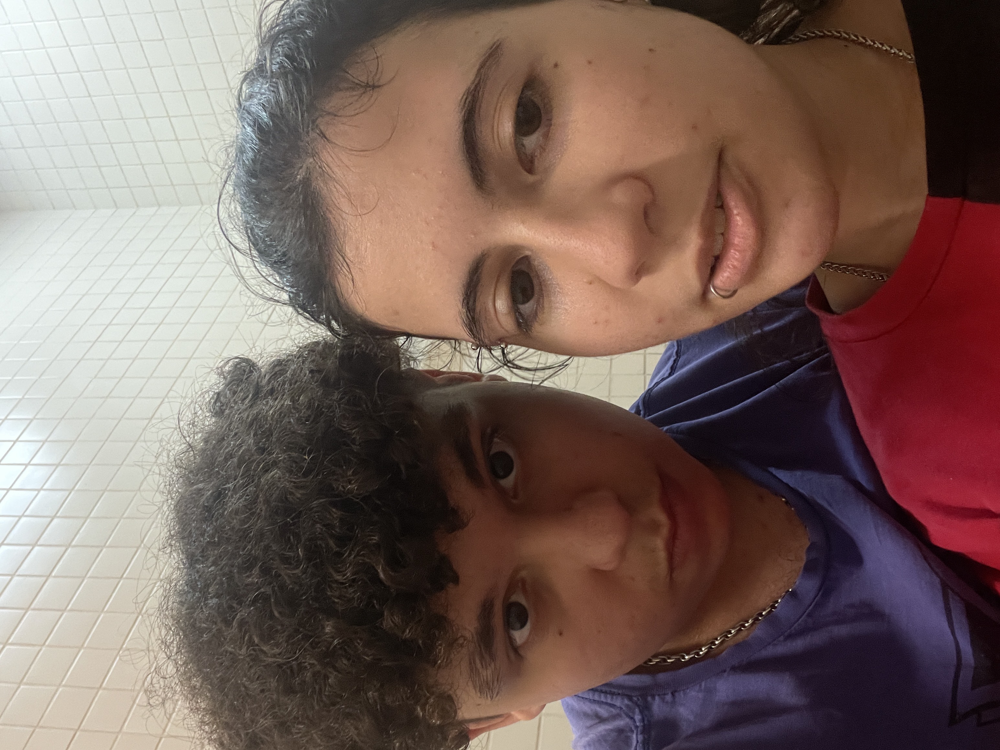

Amare et sapere vix deo conceditur.

NamoraComigo.com 
Ela é o meu amor, minha inspiração diária, e o sorriso que ilumina até os dias mais escuros. Cada momento ao seu lado é um presente, e sou grato por tê-la na minha vida. Te amo infinitamente!


Quer namorar comigo?